일곱 단계 한눈에 보기
발표자는 AI를 리서치, 아이디어 탐색, 인터페이스 프로토타입, 작업 비평, 심지어 실제 제품 구현에까지 쓰고 있어요. 그런데 결과가 좋은지는 어떤 AI 도구를 골랐느냐보다 과정에 훨씬 더 달려 있었다고 해요. 그래서 이 영상은 아이디어 하나로 시작해 동작하는 제품까지 가는 단순한 흐름을 보여 줘요.
아래 화면이 그 흐름 전체예요. 위 줄은 왼쪽에서 오른쪽으로 01 문제 정의 → 02 리서치·요구사항 → 03 와이어프레임 → 04 프로토타입, 아래 줄은 오른쪽에서 왼쪽으로 05 테스트·반복 → 06 Figma 다듬기 → 07 구현으로 이어져요. 03과 06 카드에만 'Optional'이 적혀 있고, 카드도 흐리게 칠해져 있어요.

UI(User Interface)/UX 디자이너라면 대부분 익숙한 단계들이에요. 몇 년 전 흐름과 다른 점은 'AI 네이티브'라는 거예요. 단계마다 핵심 작업이 AI 조수를 쓰는 데 뿌리를 두고 있어요. 그렇다고 매번 이대로 따르는 정해진 절차는 아니에요. 프로젝트에 따라 어떤 단계는 건너뛰고, 어떤 단계에는 훨씬 오래 머문다고 해요.
1단계: 문제부터 정의해요
거의 모든 제품은 세상의 어떤 문제를 풀려고 만들어져요. 발표자가 드는 예는 Airbnb예요. Airbnb는 손님을 전통적인 호텔 밖의 숙소와 이어 주는 문제를 풀어요. 이렇게 무엇을, 누구를 위해 디자인할지는 문제를 정하면서 또렷해져요.
예제 프로젝트는 iOS와 안드로이드용 이벤트 계획 앱이에요. 발표자는 ChatGPT에 "이벤트 계획 앱을 디자인하는데, 사용자에게 가치 있으려면 어떤 문제를 풀어야 할까?"라고 물어요. 이 단계는 일부러 가볍게 가요. 아직 리서치가 아니라 브레인스토밍을 시작하는 것뿐이에요.
ChatGPT는 'Strong problem areas'라는 표를 돌려줬어요. 왼쪽 열이 문제, 가운데가 실제로 무엇이 꼬이는지, 오른쪽이 제품이 잡을 기회예요. 첫 줄 '조율이 흩어져 있다'에는 '하나의 공유된 정보 출처'가, '돈 문제가 어색하다'에는 '비용 나누기와 정산 추적'이 짝지어져 있어요.
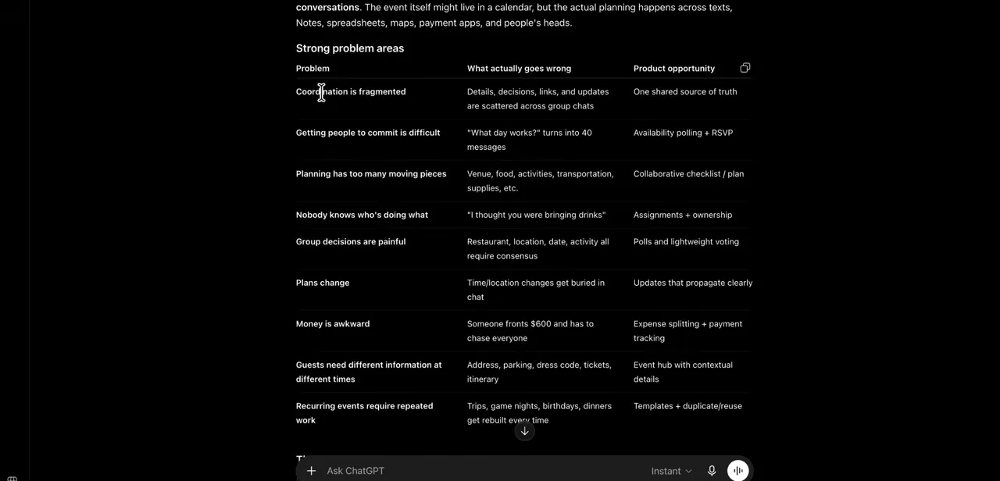
표 아래에서 ChatGPT는 앱의 중심에 둘 문제 하나를 골라요. 강조된 문장이 "Planning something with other people requires too much coordination", 곧 '다른 사람과 무언가를 계획하려면 조율이 너무 많이 든다'예요. 그 아래에는 아이디어 → 사람 초대 → 시간 찾기 → 세부 결정 → 역할 나누기 → 이벤트로 이어지는 핵심 여정도 적혀 있어요.
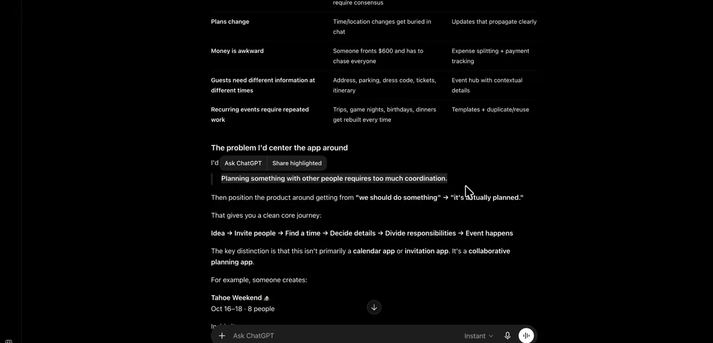
발표자는 이걸 문제 정의문이라고 불러요. 실제 작업이라면 여기서 브레인스토밍을 조금 더 하겠지만, 데모에서는 이 문장으로 충분하다고 보고 넘어가요.
2단계: 리서치하고 요구사항을 세워요
이 단계에서는 사용자, 제약 조건, 경쟁사, 기존 디자인 패턴을 생각하고, 그걸 디자인 요구사항으로 바꿔요. 발표자는 시작하기 전에 프로젝트용 Notion 페이지를 만들고 문제 정의문부터 넣어 둬요.
사용자는 원래 사람에게 물어야 해요
발표자는 사용자 부분만큼은 AI에 너무 기대지 말라고 해요. 가장 좋은 방법은 실제로 이벤트를 계획하는 사람들과 이야기해서 원하는 것을 알아내는 거예요. 이번에는 흐름을 AI 네이티브로 보여 주려고 AI로 대신해요. 대신 질문을 바꿔요. 아직 사용자가 없으니 "내 사용자에 대해 알려 줘"는 지름길일 뿐이에요. 그래서 "이 앱은 어떤 사용자를 위해 디자인해야 하고, 그들이 원하고 필요로 하는 건 뭘까?"라고 물어요.
같은 메시지에 질문을 두 개 더 붙여요. 출시를 목표로 하는 앱이라 "어떤 제약 조건을 피해 가야 할까?", 그리고 "이벤트 계획 SaaS 분야의 경쟁사를 찾고, 그들이 자주 쓰는 디자인 패턴과 그중 따를 것·피할 것을 이유와 함께 알려 줘"예요. 아래 화면 위쪽 말풍선에 세 질문이 다 들어 있어요. 답의 첫 항목은 주 사용자 '소셜 오거나이저'이고, '18 to 35, socially active, mobile-first'가 강조돼 있어요.
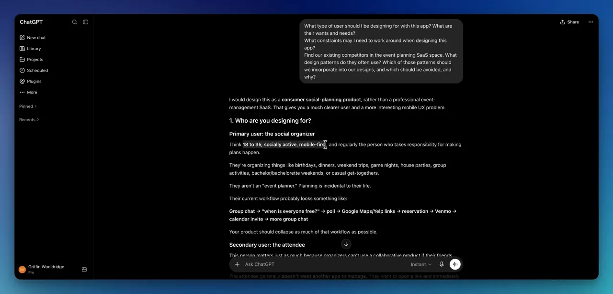
사용자가 둘이면 화면도 두 갈래예요
발표자는 실제 사용자를 만나 보기 전에는 이 판단을 확신할 수 없다고 하면서도, 데모를 위해 ChatGPT의 판단을 믿고 가요. 그리고 바로 한 가지를 떠올려요. 주최자가 있으면 참석자도 있어야 해요. 두 사람이 앱에서 보는 화면은 꽤 다를 거예요. 발표자가 말로 설명한 두 갈래를 그림으로 옮기면 이래요.
가장 큰 제약: 모두에게 설치를 요구하지 않기
답에는 사용자가 원하는 것과 중요한 디자인 제약도 들어 있었어요. 아래 화면의 '3. Important design constraints' 첫 줄이 "Don't require everyone to install the app"이에요. 그 밑에 'Organizer → app experience', 'Guest → excellent mobile web experience + optional app'이 적혀 있어요. 발표자도 RSVP(Répondez s'il vous plaît) 할 때마다 전용 앱을 깔고 싶지 않다며 이 제약이 정말 중요하다고 해요.
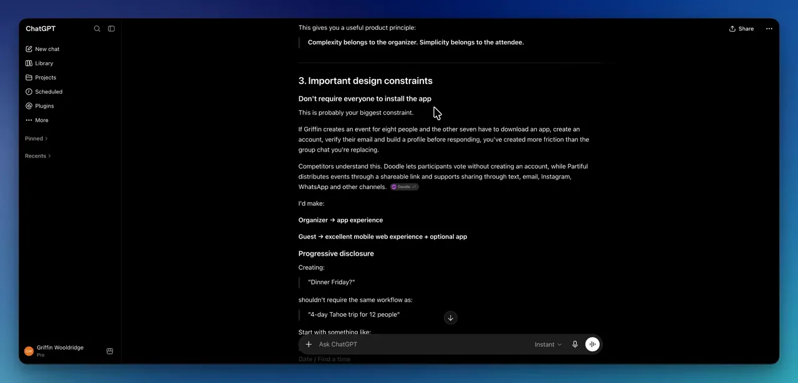
경쟁사와 디자인 패턴
경쟁 구도로는 Partiful, Doodle, Paperless Post, Eventbrite가 나왔어요. 화면을 보면 각 경쟁사 아래에 'Study:'로 무엇을 배울지 적혀 있어요. Partiful은 가장 가까운 직접 경쟁자라 이벤트 생성·RSVP 상호작용을, Doodle은 '언제 다 같이 만날 수 있나'를 푸는 일정 투표를 보라고 해요. Eventbrite는 직접 비교 대상보다는 인접 경쟁자로 분류돼 있어요.
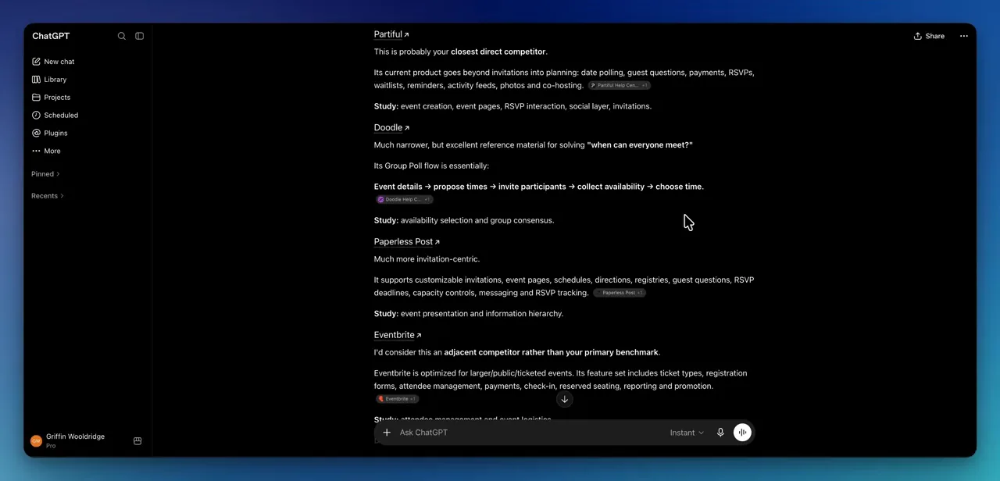
경쟁사를 아는 게 중요한 이유는 그 앱들을 직접 깔아 보고, 어떤 디자인 패턴이 흔하고 어떤 걸 내 앱에 들일지 볼 수 있어서예요. 답의 마지막에는 쓸 패턴과 피할 패턴을 정리한 큰 표도 있었어요. 발표자는 이 답 전체를 Notion 문서의 '리서치' 접이식 칸에 그대로 붙여 넣어요. 이 내용이 다음 단계에서 AI 코딩 도구, 여기서는 Claude Code에 넣을 컨텍스트가 돼요.
3·4단계: 와이어프레임은 건너뛰고 프로토타입으로
와이어프레임은 선택이에요
발표자는 와이어프레임이 요즘 점점 덜 쓰인다고 해요. Figma에서 손으로 디자인하던 시절에는 뼈대를 먼저 깔아 두면 로우파이에서 하이파이로 넘어가는 길잡이가 됐어요. 지금은 AI로 곧장 하이파이 디자인으로 갈 수 있으니, 이 단계를 건너뛰고 프로토타입으로 가요.
리서치를 컨텍스트로 넘기기
지금까지 모은 건 Notion의 '이벤트 계획 앱' 문서 하나예요. 문제 정의문과 리서치가 들어 있죠. 발표자는 오른쪽 위 메뉴에서 'Export'로 이 문서를 마크다운 파일로 내보내요. 마크다운은 사실상 텍스트라서 AI가 처리하고 이해하기에 가장 효율적인 형식 중 하나라고 해요. 아래 화면 오른쪽 메뉴의 맨 아래쪽에 Import와 Export가 보여요.
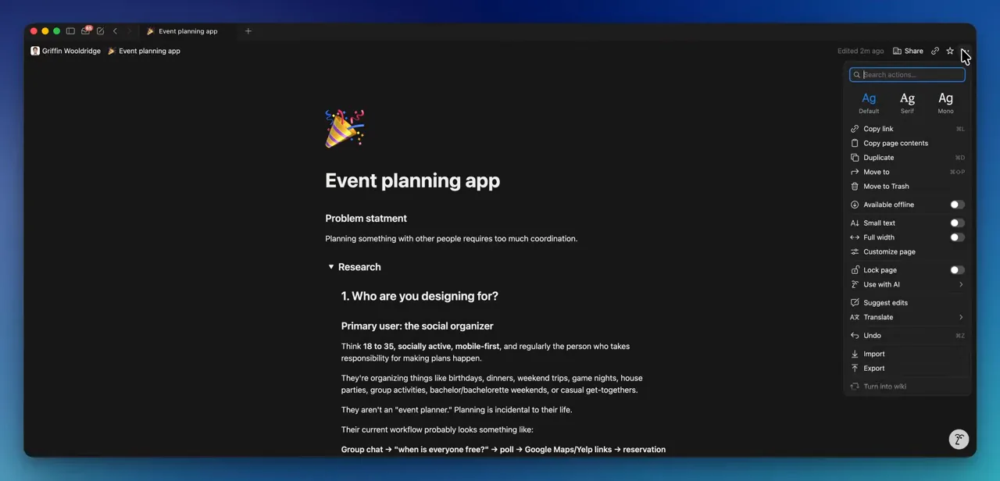
앞 단계들에서 만든 것이 어떤 경로로 프로토타입까지 흘러가는지 정리하면 이래요. 발표자가 여러 단계에 걸쳐 말로 설명한 흐름이에요.
flowchart LR A["ChatGPT
문제 정의·리서치"] --> B["Notion 문서
답변을 모아 둠"] B --> C["마크다운 파일로
내보내기"] C --> D["Claude Code
프로토타입 생성"]
첫 프롬프트는 프로젝트 크기에 맞게
마크다운 파일을 Claude Code에 끌어다 놓고 첫 프롬프트를 써요. 아래 화면 입력창에 첨부된 .md 파일과 "Let's prototype this event planning app. This is primarily a mobile-first web app, but there will also be iOS and Android apps particularly for event planners"가 보여요. 오른쪽 아래에는 고른 모델 'Opus 5'가 있어요.
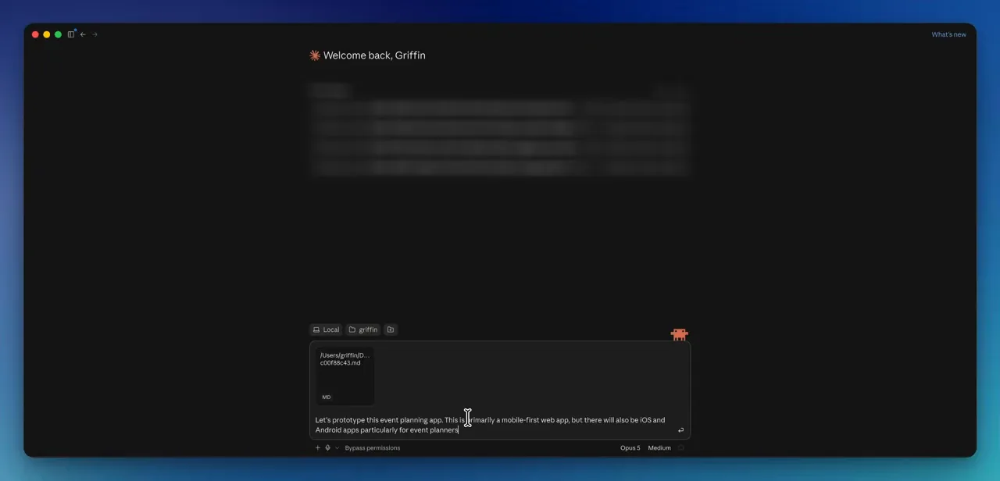
발표자는 범위를 미리 정하려고 "평범한 사용자가 볼 주요 화면 6~8개를 넣고, 클릭할 수 있게 만들어 줘"를 덧붙여요. 프로토타입을 띄워 놓고 고쳐 갈 생각이면 이 정도로 충분하고, 강한 요구사항이 있으면 더 꼼꼼히 쓰라고 해요. 모델도 골라요. 단순한 앱이면 덜 강력한 Sonnet 5, 더 밀어붙이고 싶으면 Opus 5를 써요.
첫 결과에서 볼 것은 기능이에요
Claude Code가 끝나자 'Pencil'이라는 이름의 클릭 가능한 프로토타입이 나왔어요. 아래 화면 가운데 목록에 Home, New plan, Plan page, Find a time, Decide, Who's on what, Updates, Guest link 여덟 화면이 있고, 오른쪽 아이폰 목업에서 각 화면을 눌러 볼 수 있어요. 지금 보이는 'Who's on what' 화면은 할 일을 맡고 비용을 나누는 화면이에요.
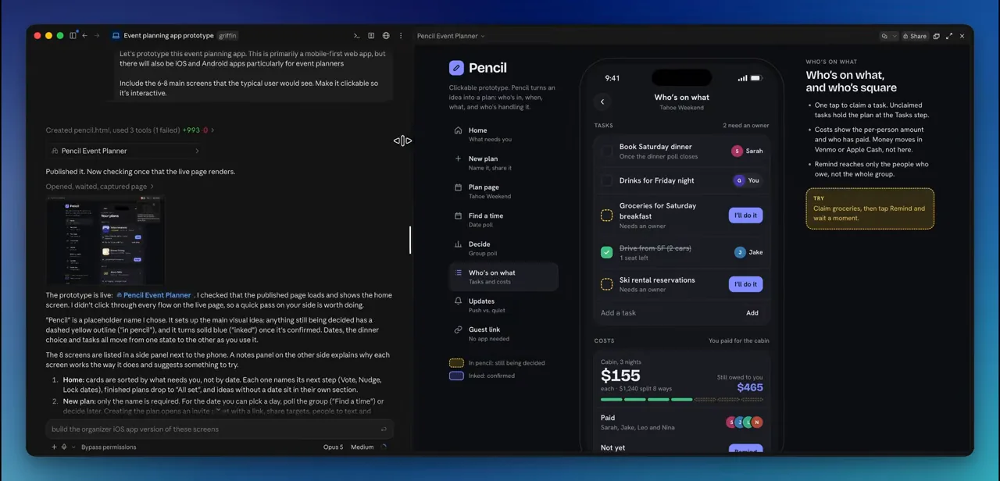
발표자는 이 시점에 디자인과 스타일링에 너무 집중하지 말라고 해요. 어떤 화면이 구현됐는지, 기능이 맞는지, 그게 올바른 기능 묶음인지를 봐야 해요. 사용자에게 어떤 기능을 줄지 정하는 건 지금처럼 초기에 해야 하고, 디자인 시스템과 스타일은 나중에 와도 돼요. 첫 생성이 완벽하지는 않아요. 아래 'Tahoe Weekend' 화면 오른쪽 위 공유 아이콘이 지나치게 커서 어색해 보이죠. 이런 건 지금 신경 쓰지 않아요.
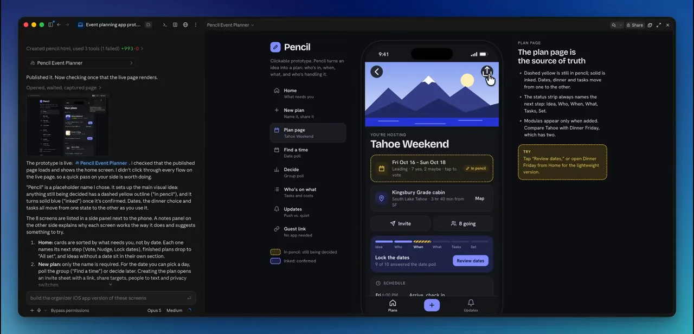
5단계: 테스트하고 반복해요
프로토타입이 생기면 테스트하고 반복해요. 처음에 세운 요구사항에 비춰 프로토타입을 평가하고, 눈에 띄는 UX(User Experience) 문제를 찾아요. 실제 사용자가 있다면 꼭 같이 테스트해요. 진짜 화면을 어떻게 오가는지 지켜보고, 구체적인 과제를 주고 해내 보게 해요. 그들이 부딪히는 마찰 지점이 무엇을 고칠지, 어디를 더 쉽게 만들지 알려 주는 좋은 단서예요.
테스트가 끝나면 반복해요. 반복은 찾아낸 것을 바탕으로 더 나은 새 버전을 만드는 일이에요.
동료에게 댓글 달듯 고치기
발표자가 Claude Code로 반복할 때 좋아하는 건 댓글 기능이에요. 프로토타입을 아티팩트로 보고 있을 때 오른쪽 위에서 댓글 기능을 켜면, 목업 속 요소 위에 마우스를 올릴 때마다 강조돼요. 크롬의 요소 검사와 비슷해요. 아래 화면에서 큰 공유 버튼을 고르자 'button "Share"'라는 말풍선이 뜨고, 발표자가 "@Claude Improve the sizing and padding of this icon button and all others"라고 적었어요.
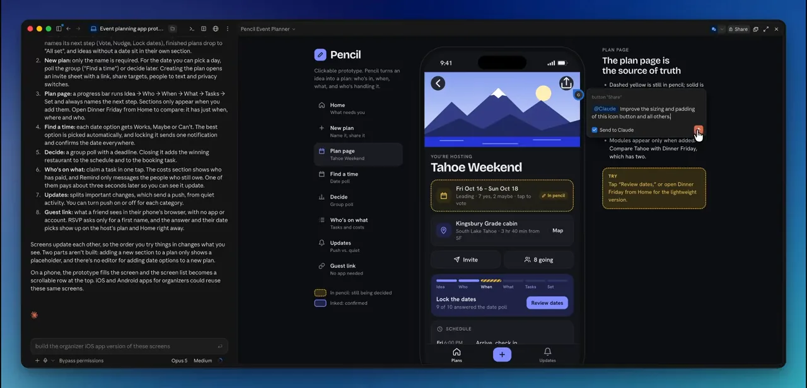
댓글은 채팅 쪽에 나타나고 Claude Code가 작업을 시작해요. 아래 화면 왼쪽 대화에 "Comment on 'Pencil Event Planner' sent to Claude"가 있고, 그 밑에 Claude가 "아이콘 버튼을 모두 키우고 여백을 넓혀 버전 2로 다시 게시했다"고 답한 게 보여요.
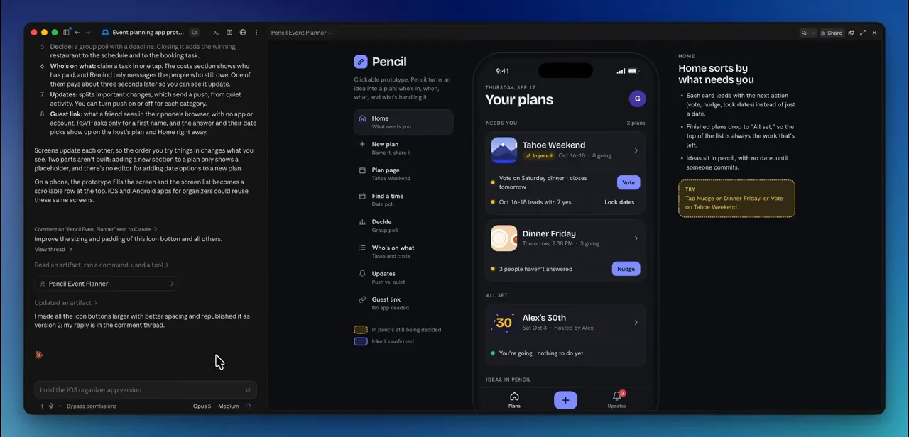
Codex를 쓴다면 비슷하게 동작하는 annotate 기능이 있다고 해요. 발표자가 짚는 구분은 이래요.
| 어떤 수정인가요 | 어디로 시킬까요 |
|---|---|
| 버튼 크기처럼 구체적인 한 곳 | 요소에 댓글 달기 (Claude) · annotate (Codex) |
| 전체에 걸친 큰 변경 | 메인 프롬프트 입력창 |
6단계: Figma에서 다듬어요 (선택)
이 단계도 선택이에요. Figma와 완전히 작별하고 싶지 않고, 여전히 Figma로 디자인을 다듬고 싶은 디자이너를 위한 단계예요. 프로토타입 화면을 Figma로 보내서 더 세밀하게 고치는 거예요. 발표자는 Figma MCP(Model Context Protocol)를 쓰는 게 가장 좋다고 해요.
Figma 커넥터 연결하기
- 왼쪽 사이드바에서 Customize를 열어요 — Skills 대신 Connectors 탭을 고르고 'figma'를 검색해요. 목록 맨 위에 Figma 커넥터가 나와요
- 커넥터를 추가하고 로그인해서 인증을 마쳐요
- 대화 입력창의 + 버튼에서 Connectors 위로 마우스를 올려 Figma가 켜져 있는지 확인해요
아래 화면이 첫 단계예요. 위쪽 탭에서 Connectors가 선택돼 있고, 검색창에 'figma'를 넣자 첫 칸에 'Figma — Generate diagrams and better code from Figma context'가 체크 표시와 함께 나와요.
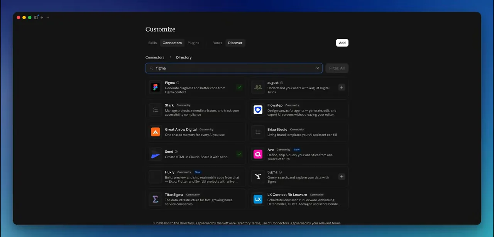
프로토타입을 편집 가능한 프레임으로
그다음 Claude에게 이렇게 시켜요. "프로토타입 화면들을 완전히 편집 가능한 프레임으로 Figma에 보내 줘. 레이아웃이 일대일로 똑같도록 오토 레이아웃을 쓰고, Figma 커넥터를 써." Claude는 여덟 화면이 새 Figma 파일에 들어갔다고 알려 줘요.
아래 화면이 그 Figma 파일이에요. 왼쪽 레이어 목록에 01 Home부터 08 Guest link까지 여덟 프레임이 있고, 캔버스에는 Home, New plan, Plan page가 나란히 보여요. 발표자는 색, 스타일, 레이아웃이 Claude Code에서 본 것과 거의 일대일로 옮겨졌다고 해요. 색 변수, 글꼴 변수, 간격 그리드까지 따라왔어요.
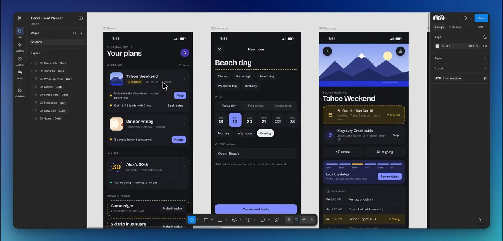
Figma가 더 빠른 일
발표자의 예는 여러 요소의 모서리 둥글기를 한꺼번에 바꾸는 거예요. Figma에서는 레이어를 모두 골라 값을 바꾸면 몇 초면 끝나요. Claude Code에서는 프롬프트 하나를 통째로 써야 하는 일이죠. 아래 화면에서 'Decide' 화면의 투표 선택지 네 개가 함께 선택돼 있고, 오른쪽 패널의 Corner radius 칸을 조정하고 있어요.
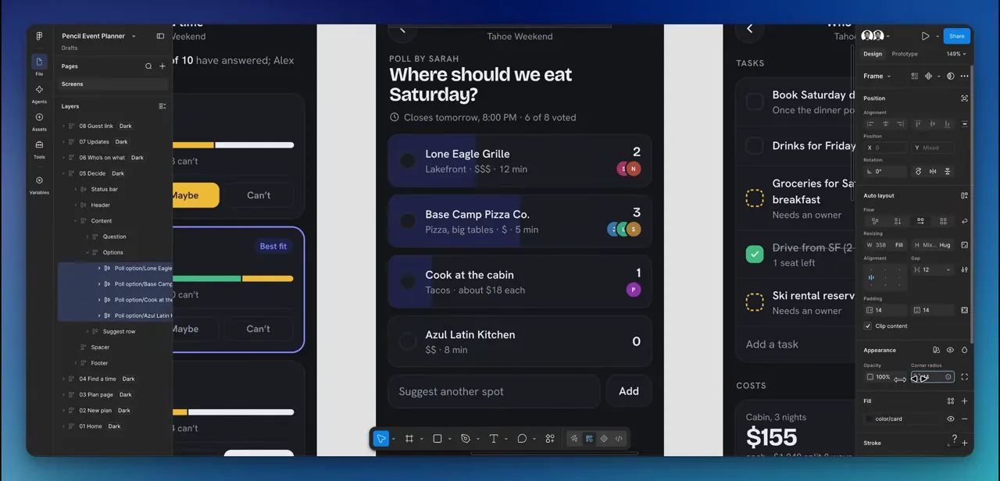
세부 하나하나가 완벽해야 하는 사람이라면 Figma로 가져가서 직접 다듬고, Claude가 같은 Figma 파일을 읽게 해서 다시 Claude Code로 돌려보내면 돼요.
7단계: 진짜 앱으로 만들어요
디자인만 하고 구현은 하지 않는다면 앞 단계가 끝이에요. 실제로 만들어 인터넷에 내놓고 싶다면 구현 단계로 가요. 발표자는 기술을 몰라도 된다고 해요. AI가 꽤 매끄럽게 해 주는 일이라서요.
한 번에 다 시키지 않아요
지금 아티팩트에 보이는 건 어디까지나 프로토타입이에요. 실제 사용자와 실제 데이터를 받아 줄 앱이 아니에요. 그래서 아래 화면 입력창처럼 시켜요. "이 프로토타입을 실제 앱으로 만들자. 데이터베이스를 붙이고, 사용자 인증을 켜고, 실제로 동작하는 앱이 되지 못하게 막는 빈틈을 채워 줘. 주로 모바일 퍼스트 웹 앱이어야 해."
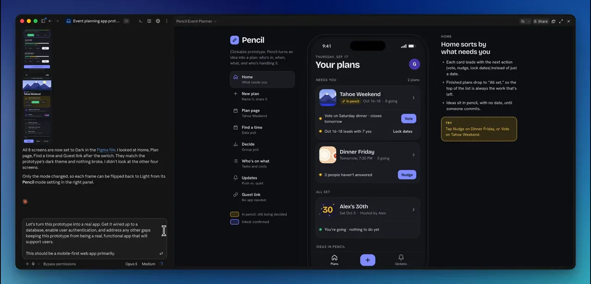
iOS와 안드로이드 구현은 나중으로 미뤄요. 구현 단계에서 가장 피하고 싶은 건 몇 시간짜리 거대한 작업을 한꺼번에 얹는 거예요. 그러면 실수할 여지가 훨씬 커져요. 그리고 곧장 출시까지 가게 하지 않고 "구현 계획을 줘"라고 덧붙여요.
구현 계획에 담긴 것
Claude는 구현 단계별 계획과 아직 발표자에게 받아야 할 결정들을 내놓았어요. 아래 화면 위쪽 'Stack' 표가 추천 기술 스택이에요. 발표자가 영상에서 하나하나 읽지는 않지만, 화면에 보이는 그대로 옮기면 이래요.
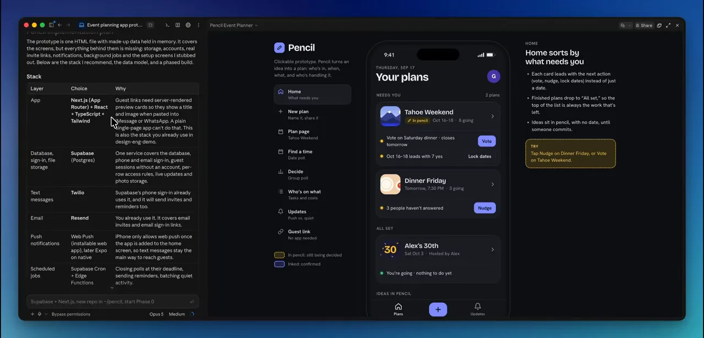
| 층 | 계획이 고른 것 |
|---|---|
| 앱 | Next.js(App Router) + React + TypeScript + Tailwind |
| 데이터베이스·로그인·파일 저장 | Supabase(Postgres) |
| 문자 메시지 | Twilio |
| 이메일 | Resend |
| 푸시 알림 | 설치형 웹 앱의 Web Push, 나중에 네이티브는 Expo |
| 예약 작업 | Supabase Cron + Edge Functions |
계획 아래쪽에는 단계별 일정이 있어요. 아래 화면에 보이는 마지막 세 단계는 '4. 돈·미디어·마감 손질'(2주), '5. 출시 준비'(1~2주), '6. 네이티브 앱'(공개 베타 뒤 3~4주)이고, "공개 베타까지 대략 10~12주"라고 적혀 있어요. 그 밑 'Decisions I need from you'에는 스택을 이대로 갈지, 출시 때 문자를 보낼지 이메일만 보낼지 같은 질문이 있어요.
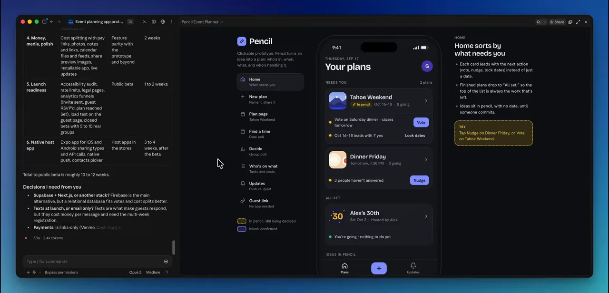
발표자는 이 큰 계획을 보면 알 수 있듯이, 이 단계가 프로젝트에서 연산과 토큰을 가장 많이 쓰는 단계라고 해요. 개발자라도 현실적으로 몇 주가 걸릴 일이에요. 그래서 기술 배경이 있으면 Claude가 어디서 틀리는지, 어디서 방향을 잡아 줘야 하는지 판단하기 쉬워요.
기술 배경 없이 낸 앱
그래도 발표자는 기술 배경 없이 Claude Code와 Codex만으로 iOS 앱을 냈다고 해요. 'Rolltake'라는 텔레프롬프터 앱으로, 카메라 앞에서 대사를 읽을 때 대본을 한 줄씩 보여 줘요. 아래 화면이 그 앱의 소개 페이지예요. 'Turn any script into your best take.'라는 문구와 App Store 버튼이 보여요.
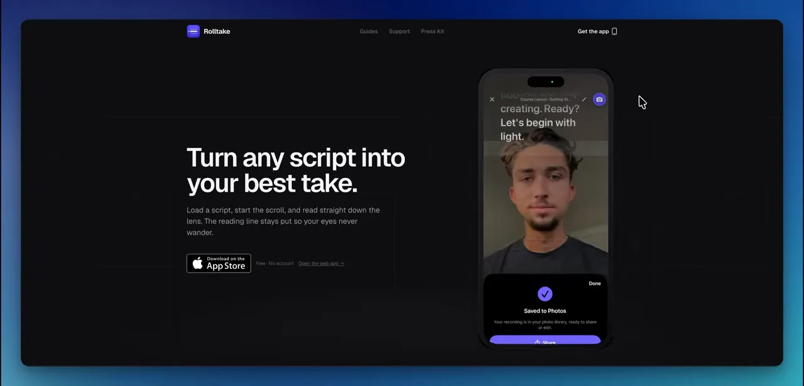
한 번의 프롬프트로 끝나지 않아요. 반복하고 버그를 고쳐야 해요. 다만 그 일도 Claude Code나 Codex 같은 AI로 다 할 수 있다는 게 발표자의 말이에요.
마무리: 모든 단계에 AI를 쓰지는 않아요
영상 끝에서 발표자는 흐름을 다시 짚어요. 실제 사용자에게 도움이 되는 진짜 문제를 푸는지 확인하고, 리서치로 요구사항을 세우고, 필요하면 와이어프레임을 거쳐 프로토타입을 만들어요. 테스트와 반복을 계속하고, Figma가 좋으면 Figma MCP로 다듬은 뒤 돌려보내고, 끝까지 가고 싶으면 구현해요.
아래 화면은 그 정리 장면이에요. 단계 이름 옆 스위치 중 Research, Prototype, Iterate, Product는 켜져 있고 Test와 Refine은 꺼져 있어요. 프로젝트마다 쓸 단계를 골라 켠다는 뜻으로 읽을 수 있어요.
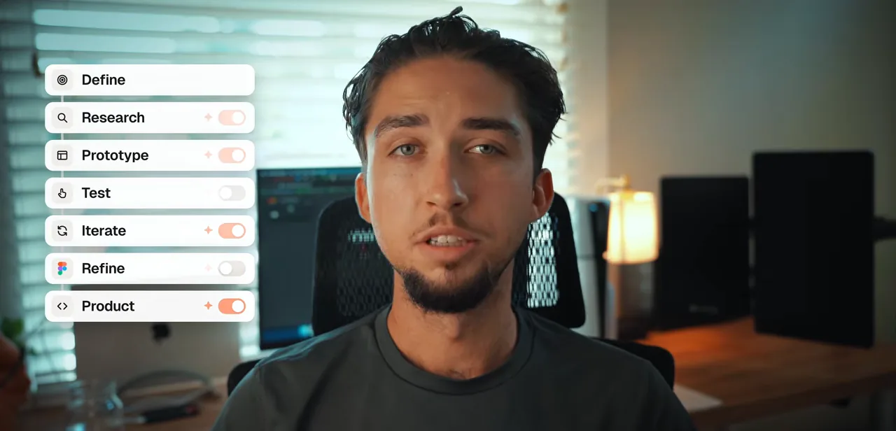
발표자가 강조하는 건 모든 단계에 AI를 쓰려 하지 않는다는 점이에요. 어떤 프로젝트는 리서치와 반복이 많이 필요하고, 어떤 건 아이디어에서 프로토타입으로 놀랄 만큼 빨리 가요. 도구는 계속 바뀌니까 특정 워크플로를 외우기보다, 단계마다 무엇을 이루려는지 아는 과정을 만드는 데 집중하라고 해요.
I'd focus less on memorizing one specific AI workflow and more on building a process where you know what you're trying to accomplish at each stage.
특정 AI 워크플로 하나를 외우기보다, 단계마다 무엇을 이루려는지 아는 과정을 세우는 데 집중하겠어요.
— 영상 16:25